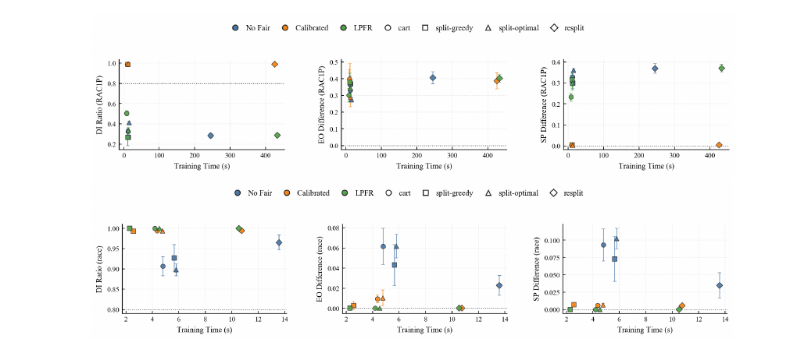

fair-SPLIT: Near-Optimal Decision Trees for Accuracy, Sparsity, and Fairness
Overview
Greedy decision-tree induction is fast but local, while exact global optimization often does not scale. fair-SPLIT builds on the SPLIT family to search an optimal shallow tree prefix and complete the remaining leaves, then studies lightweight fairness interventions on the resulting sparse trees.
Method
The method uses dynamic programming to construct an optimal prefix under an accuracy-plus-sparsity objective, then fills each prefix leaf greedily or optimally. For fairness, it compares sensitive-attribute removal with two post-processing options: a label-aware sample-level calibration diagnostic and Leaf-Pareto Fair Recalibration (LPFR), a deployable leaf-level override selected under an accuracy budget.
Results
No single learner dominates all datasets: CART remains strong on conventional accuracy benchmarks, while SPLIT variants lead on selected tasks. Removing sensitive attributes alone does not eliminate proxy discrimination; sample-level calibration nearly closes statistical-parity gaps but is only diagnostic, whereas LPFR is more conservative and can be applied at inference time.


{kind=link}
